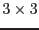

Pile-up is in a way a simple phenomenon. However once the image/event is obtained, it is not trivial at all to reproduce the non-piled up image, which is what an observer really wants.
Pile-up is essentially described as an event which contains more than one incoming photon in it, primarily due to slow read-out, comparing with the incoming flux. By definition, those more-than-one photons are inseparatable. Therefore practically the event is regarded as the `sum' of those events; ie., the energy of the event is regarded as the total sum of those incoming photons. Therefore these piled-up events (1) skew the spectrum of the source, namely, the piled-up spectrum appears to be harder than the original spectrum, and (2) reduces the observed flux in photons per unit time for the entire energy band (though preserves in the first-order approximation the flux in unit of energy per unit time). These two are the most simple effect of the pile-up.
In the case of the CCD detection (in the imaging mode), the situation is more complicated. If the point-spread function (PSF) is larger than the CCD pixel, which is the case in both pn and MOSs, the second (third, fourth, etc) photon, which is due to cause the pile-up, is more likely to fall onto the surrounding pixel than the central pixel, onto which the first photon fell. If the first photon is due to cause a single pixel event, the combination of the first and second photons would cause a double pixel event -- either diagonal pixel or bipixel event, or, depending on the geometry and energy, it may cause tripixel or quadripixel event. Or worse, if the pile-up is extremely severe, the sum of all those piled-up photons may give an active signal for the entire  pixels (pattern 31 in MOS), which leads to the situation where the position is likely to appear to be a void spot in the image, because the pattern 31 is generally filtered out in the filtering.
Hence the pile-up also alters the grade-branching ratio. In short higher grade (more double-pixel events, for example) events are more likely to increase. This follows if one extracts only the single pixel events, the derived flux will be smaller than the true value in the case of pile-up, because more events are detected as double (triple, quadruple) pixel events as piled-up (or combined) events, each of which could be a sum of originally single-pixel events.
In the piled-up image, the observed PSF must be flatter than the non-piled-up one, because the centre of the PSF is more heavily piled up than its outer skirts. If the pile-up at the centre is very severe, as explained above, the centre of the PSF may show a depression, or worse a void.
What we get as data is the already piled-up data, that is, a skewed image with a skewed energy spectrum (and light curve). Generally speaking we know neither the true image nor spectrum. Conversely that is what we want to get. We understand well the skewing process by pile-up, however the inverse function for it is not analytical and is extremely hard to calculate even computationally.
Consequently the pile-up is a function of the incoming flux, energy, surface brightness (of the source(s)), as well as the shape of the PSF. It affects the grade-branching ratio (of the CCD), observed flux and energy and spatial distribution. If the source flux is the input, the vignetting is a factor of concern, too.